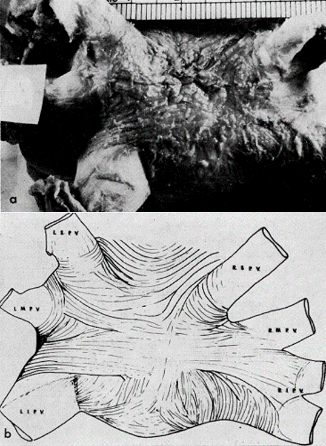

.. is all of the above.
.. from triggers to reentry, from electrical to structural remodelling.
Mechanisms 2/x

- Focal source, mostly from pulmonary veins, can initiate AF.
- Mechanisms include trigger and localized reentry.
- This focal source is more involved in driving AF in paroxysmal > persistent types.
Activation of parasympathetic and/or sympathetic limbs can provokes AF.
Autonomic input arises from both central nervous system and local ganglionated plexi.